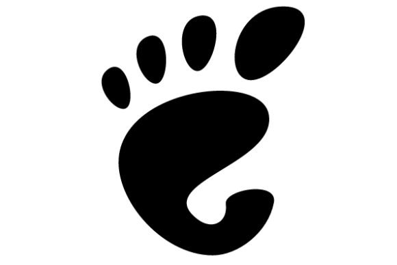
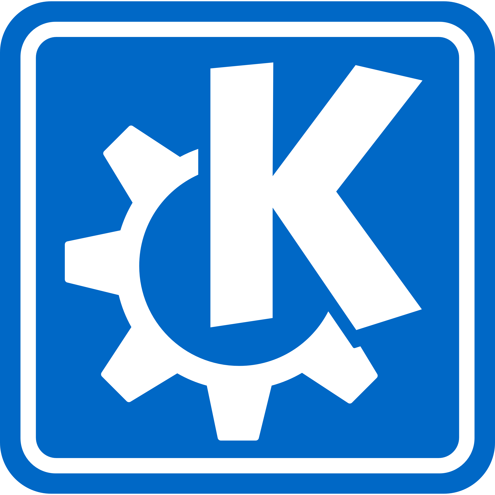
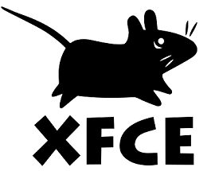

Introduction à Linux
Premier pas avec une distribution

Ce que nous allons faire
- Comment préparer une clé USB
- Lancer une distribution USB
- Pour aller plus loin
Choisir sa distribution
- Deux grandes familles : RedHat et Debian
- RedHat : RHEL, CentOS et Fedora
- Debian : debian, ubuntu et Linux mint
L'environnement graphique
Plusieurs options :
- Gnome
- KDE
- XFCE

Type de besoin
- Serveur => RHEL, CentOS ou Debian
- Bureau => Ubuntu, Linux mint ou Fedora
- Recovery => SystemRescueCd
Télécharger sa distribution
- Debian like => mint
- RedHat => CentOS pour la stabilité
- Fouiller sur le site pour trouver son bonheur
Préparer une clé USB
- Installation de Lili USB Creator
- Récupérer une distribution
- Pour aller plus loin
Booter sur sa clé
- F12 au démarrage
- Autres touches possible (F2, F8 ou Suppr)
- Ajuster l'ordre de démarrage/choisir sa clé USB
Des questions ?